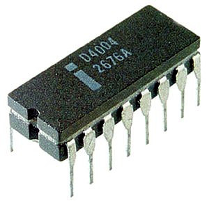
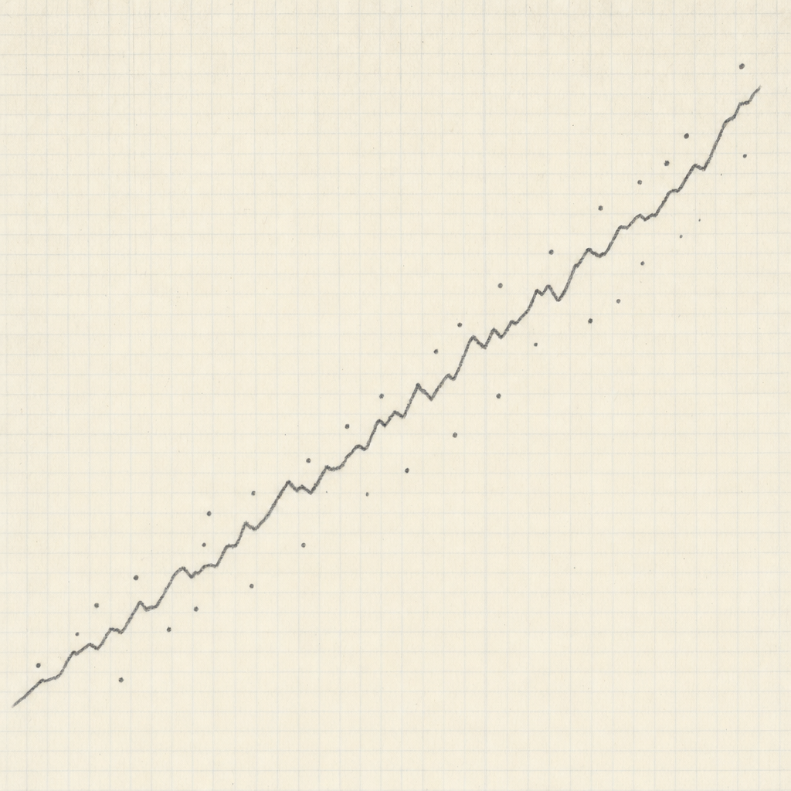

Across 49 years and seven orders of magnitude, real chips have followed Gordon Moore's prediction to within 0.03 of a year. Almost no other quantitative claim in technology has held this well.
The forecast that aged
Empirical CPU doubling time across the dataset is 2.03 years. Moore's 1975 revised prediction was 2.00 years. Forty-eight years, seven orders of magnitude, 170 chips — and the slope deviates by 0.03.
In numbers: the Intel 4004 in 1971 carried 2,250 transistors. The AMD EPYC Rome in 2019 carried 32 billion. A 14.2-million-fold climb, on a curve so steady that a pencil line drawn in 1975 still threads through the points half a century later.
None of this was law in the physical-constants sense. Gordon Moore wrote a four-page article for Electronics magazine in April 1965 and drew a straight line through five data points. He projected that "by 1975 economics may dictate squeezing as many as 65,000 components on a single silicon chip." The piece had no formal model. The exponent has held anyway.
Every chip with a recorded transistor count, 1963–2019. Log scale on the y axis. The dashed line is Moore's 1975 two-year-doubling prediction, anchored at the Intel 4004 in 1971. Hover any point for chip name and exact count. Source: Wikipedia Transistor count via TidyTuesday (2019-09-03).
The man and the curve
When the article was published Moore was Director of R&D at Fairchild Semiconductor; he hadn't yet co-founded Intel. The phrase "Moore's Law" wasn't coined for another five years. In 1975, after a decade of new data, he revised the doubling rate from 12 months to 24 — the version that has stuck.

The first chip on the curve, six years after the prediction, was the Intel 4004: 2,300 transistors at a 10-micron process node, designed by Federico Faggin's team for Busicom's printing calculator. It is the anchor point of the entire CPU dataset — the leftmost dot on every Moore's-Law plot ever published.
Three families, three slopes
Plot all 326 chips on one chart and three roughly parallel lines emerge — but they are not the same line. CPUs double every 2.03 years, GPUs every 1.85 years, RAM every 1.56 years.
The differences are mechanical, not magical. RAM is mostly bit cells; doubling capacity directly doubles transistors, so RAM tracks lithography almost one-to-one. CPUs spend their transistor budget on logic complexity, which has historically scaled at exactly the rate Moore drew. GPUs sit in between — until the late 2000s, when parallel arithmetic became the default tool for both graphics and machine learning, and GPU counts started catching CPUs.
By 2017–2018 the families converge: a 21-billion-transistor GPU (Volta), a 23-billion-transistor CPU (GraphCore), and a 137-billion-transistor RAM module are all sitting in roughly the same band on the chart. Before the late 2010s no such band existed.
Per-year maximum transistor count by chip family, 1963–2019. Log scale. Each dot is the largest chip released in that family that year; dashed lines mark family doubling times.
Where Moore was wrong

The 1965 paper aimed at 65,000 components by 1975. The CPUs that actually shipped in 1975 topped out at 5,000 transistors. The 1976 maximum was 8,500. Moore overshot by a clean order of magnitude — exactly the kind of error any forecaster makes when extrapolating a young exponential.
Test the 1965 prediction
Moore predicted 65,000 components on a single chip by 1975. Where did real chips actually land? Drag the marker to your guess, then click Reveal.
In 1975 he halved the doubling rate from 12 months to 24, and the revised line aged into a law. The version most people know — Moore's Law as a steady two-year doubling — is not what the original article said. It is what Moore said after checking against a decade of evidence.
Where it slowed without anyone noticing
Split the CPU record at 2005 — the year Dennard scaling collapsed and clock speeds plateaued — and the doubling time stretches: 2.02 years before, 2.51 years after. CAGR drops from 40.9% to 31.8%. GPUs show the same break, even more sharply: 1.62-year doubling before 2005, 2.53 years afterward.
This slowdown is the consumer reality that almost no Moore's-Law graph shows. After ~2005, transistors kept doubling, but they stopped translating into proportionally faster single-threaded performance. Clock speeds froze around 3–4 GHz. The new transistor budget went into multi-core, GPUs, and AI accelerators — parallelism instead of frequency. The "exponential is still going" story is true; the "your laptop will be twice as fast every two years" story is not.
Empirical doubling time before and after the 2005 Dennard-scaling break, for CPU and GPU. Dashed reference line at 2.00 years (Moore's 1975 prediction).
Crossings, jumps, and the chips that beat the line
The dataset crosses each power-of-ten transistor milestone roughly every seven years. Past 1,000: Intel 4004, 1971. Past 10,000: Intel 8086, 1978. Past 1 million: Intel i860, 1989. Past 1 billion: dual-core Itanium 2, 2006. Past 10 billion: 32-core SPARC M7, 2015. Seven 10x crossings in 44 years — exactly the rhythm a 2-year doubling produces.
The crossings are not smooth. The single biggest year-over-year jump in the running CPU max came in 1982, when the Intel 80286 leapt 11.65x past the previous high of 11,500 transistors. The Motorola 68020 in 1984 jumped 8.64x. Dual-core Itanium 2 in 2006 jumped 6.80x. The exponential advances in shoves, not glides, and a few well-placed chips do most of the work.
Residuals to the per-family fit reveal two families of outlier. Above the line: Intel's Itanium 2 series (the dual-core Itanium 2 sits +0.95 log-units above its year's predicted count, the largest residual in the CPU record), and SPARC64. Below the line: ARM 9TDMI, ARM 1, ARM 2, ARM Cortex-A9, Atom — chips designed to trade transistor count for power efficiency. The same line that traces the law also separates two design philosophies: maximalist server logic on one side, low-power embedded chips on the other.
Top 5 over- and under-performers per family, by log-residual to the per-family trend. Above the dashed zero line: chips that beat their year's predicted count. Below: chips that trailed it.
The Moore line on the data
Drawing Moore's 2-year line through the Intel 4004 at 1971 and projecting it to 2019 gives a predicted 38.6 billion transistors. The actual maximum CPU in 2019 was 32 billion. Moore's prediction overshoots by 21% — within the dataset's own stated 10–20% accuracy band.
Moore's 2-year doubling line (anchored at Intel 4004, 1971, 2,300 transistors) overlaid on the actual per-year maximum CPU transistor count. Both lines on a log y axis.
On a single log-scale chart of all 326 named chips, the Moore line passes through the cloud almost like a regression. Forty-eight years apart, the prediction line and the empirical chips meet at the same place — to within one order of magnitude — every year. There is essentially no other public, multi-decade forecast in technology that has held this well. That is the headline finding.
After the dataset
The International Technology Roadmap for Semiconductors — the global document that effectively codified Moore's Law — released its final report in 2016 and dissolved. The closing report concluded that traditional 2-D scaling would hit an economic wall by 2021, after which the industry would lean on 3-D stacking, advanced packaging, and specialised accelerators rather than simple lithographic shrink.
The dataset cuts off in 2019, so it captures the very first chips of the post-ITRS era — Apple's A12X, Nvidia Turing, AMD EPYC Rome — without yet reaching the trillion-transistor wafer-scale chips that arrived afterward. Apple's M1 Ultra in 2022 fused two M1 Max dies on a single interposer for 114 billion transistors. Cerebras's WSE-3 in 2024 is a single piece of silicon with 4 trillion transistors — more than 100 times the count of any chip in this dataset.
start of dataset
end of dataset
after the dataset
after the dataset
Whether the line continues, bends, or transforms is the open question. Inside the 1971–2019 window, though, the answer is settled: the most famous quantitative prediction in modern technology was, on the data, almost exactly right.
References
- Data source: Wikipedia — Transistor count via TidyTuesday 2019-09-03 (CPU n=176, GPU n=112, RAM n=47).
- Origin paper: G. Moore, "Cramming More Components onto Integrated Circuits", Electronics 38(8), April 19, 1965.
- Background: Computer History Museum, "1965: Moore's Law Predicts the Future of Integrated Circuits".
- Dennard scaling: Dennard scaling — Wikipedia.
- ITRS final report: HPCwire, July 2016.
- Post-dataset benchmarks: Cerebras WSE-3 (4T transistors); Apple M1 Ultra (114B).
- Reference photos: Gordon Moore via Wikimedia Commons (PD); Intel 4004 via Wikimedia Commons (CC BY-SA 3.0 / GFDL).
- Tools: Vega-Lite 5 (charts), vanilla JS (interactive). Analysis in Python — full code in
code/.